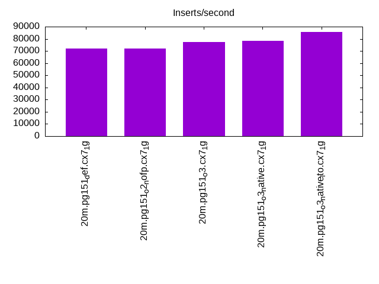
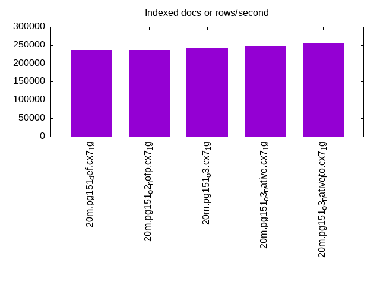
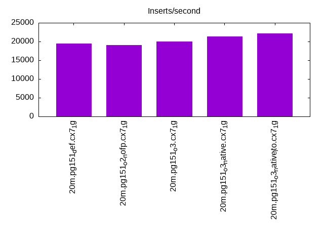
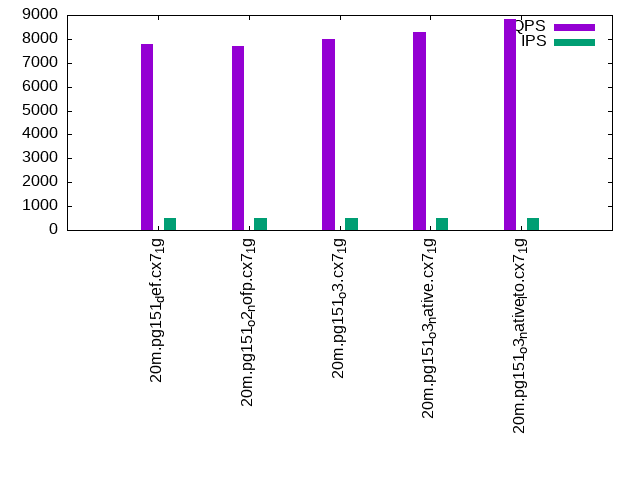
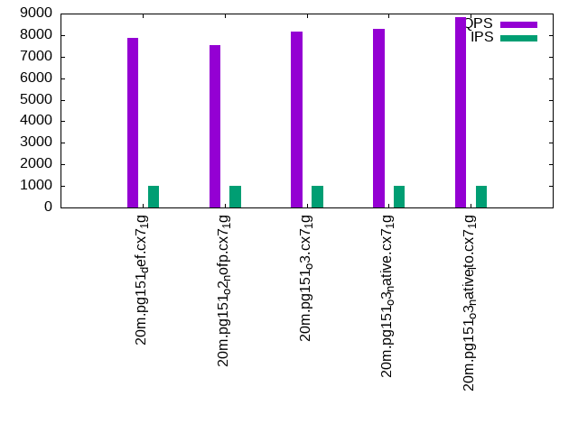

Introduction
This is a report for the insert benchmark with 20M docs and 1 client(s). It is generated by scripts (bash, awk, sed) and Tufte might not be impressed. An overview of the insert benchmark is here and a short update is here. Below, by DBMS, I mean DBMS+version.config. An example is my8020.c10b40 where my means MySQL, 8020 is version 8.0.20 and c10b40 is the name for the configuration file.
The test server has 8 AMD cores, 16G RAM and an NVMe SSD. It is described here as the Beelink. The benchmark was run with 1 client and there were 1 or 2 connections per client (1 for queries, 1 for inserts). It uses 1 table. It loads 20M rows without secondary indexes, creates secondary indexes, loads another 20M rows then does 3 read+write tests for one hour each that do queries as fast as possible with 100, 500 and then 1000 writes/second/client concurrent with the queries. The database is cached by the OS but not by the database. Clients and the DBMS share one server. The per-database configs are in the per-database subdirectories here.
The tested DBMS are:
- pg151_def.cx7_1g - Postgres 15.1, the cx7_1g config and the build used: -O2
- pg151_o2_nofp.cx7_1g - Postgres 15.1, the cx7_1g config and the build used: -O2 -no-omit-frame-pointer
- pg151_o3.cx7_1g - Postgres 15.1, the cx7_1g config and the build used: -O3
- pg151_o3_native.cx7_1g - Postgres 15.1, the cx7_1g config and the build used: -O3 -march=native -mtune=native
- pg151_o3_native_lto.cx7_1g - Postgres 15.1, the cx7_1g config and the build used: -O3 -march=native -mtune=native and -flto
Contents
- Summary
- l.i0: load without secondary indexes
- l.x: create secondary indexes
- l.i1: continue load after secondary indexes created
- q100.1: range queries with 100 insert/s per client
- q500.1: range queries with 500 insert/s per client
- q1000.1: range queries with 1000 insert/s per client
Summary
The numbers are inserts/s for l.i0 and l.i1, indexed docs (or rows) /s for l.x and queries/s for q*.2. The values are the average rate over the entire test for inserts (IPS) and queries (QPS). The range of values for IPS and QPS is split into 3 parts: bottom 25%, middle 50%, top 25%. Values in the bottom 25% have a red background, values in the top 25% have a green background and values in the middle have no color. A gray background is used for values that can be ignored because the DBMS did not sustain the target insert rate. Red backgrounds are not used when the minimum value is within 80% of the max value.
| dbms | l.i0 | l.x | l.i1 | q100.1 | q500.1 | q1000.1 |
|---|---|---|---|---|---|---|
| 20m.pg151_def.cx7_1g | 72202 | 236470 | 19436 | 7936 | 7771 | 7884 |
| 20m.pg151_o2_nofp.cx7_1g | 72202 | 236470 | 19120 | 7703 | 7715 | 7537 |
| 20m.pg151_o3.cx7_1g | 77220 | 242169 | 20000 | 7889 | 7984 | 8166 |
| 20m.pg151_o3_native.cx7_1g | 78125 | 248148 | 21345 | 8158 | 8278 | 8281 |
| 20m.pg151_o3_native_lto.cx7_1g | 85470 | 254430 | 22124 | 8685 | 8835 | 8824 |
This table has relative throughput, throughput for the DBMS relative to the DBMS in the first line, using the absolute throughput from the previous table.
| dbms | l.i0 | l.x | l.i1 | q100.1 | q500.1 | q1000.1 |
|---|---|---|---|---|---|---|
| 20m.pg151_def.cx7_1g | 1.00 | 1.00 | 1.00 | 1.00 | 1.00 | 1.00 |
| 20m.pg151_o2_nofp.cx7_1g | 1.00 | 1.00 | 0.98 | 0.97 | 0.99 | 0.96 |
| 20m.pg151_o3.cx7_1g | 1.07 | 1.02 | 1.03 | 0.99 | 1.03 | 1.04 |
| 20m.pg151_o3_native.cx7_1g | 1.08 | 1.05 | 1.10 | 1.03 | 1.07 | 1.05 |
| 20m.pg151_o3_native_lto.cx7_1g | 1.18 | 1.08 | 1.14 | 1.09 | 1.14 | 1.12 |
This lists the average rate of inserts/s for the tests that do inserts concurrent with queries. For such tests the query rate is listed in the table above. The read+write tests are setup so that the insert rate should match the target rate every second. Cells that are not at least 95% of the target have a red background to indicate a failure to satisfy the target.
| dbms | q100.1 | q500.1 | q1000.1 |
|---|---|---|---|
| pg151_def.cx7_1g | 100 | 499 | 998 |
| pg151_o2_nofp.cx7_1g | 100 | 499 | 998 |
| pg151_o3.cx7_1g | 100 | 499 | 998 |
| pg151_o3_native.cx7_1g | 100 | 499 | 998 |
| pg151_o3_native_lto.cx7_1g | 100 | 499 | 998 |
| target | 100 | 500 | 1000 |
l.i0
l.i0: load without secondary indexes. Graphs for performance per 1-second interval are here.
Average throughput:
Insert response time histogram: each cell has the percentage of responses that take <= the time in the header and max is the max response time in seconds. For the max column values in the top 25% of the range have a red background and in the bottom 25% of the range have a green background. The red background is not used when the min value is within 80% of the max value.
| dbms | 256us | 1ms | 4ms | 16ms | 64ms | 256ms | 1s | 4s | 16s | gt | max |
|---|---|---|---|---|---|---|---|---|---|---|---|
| pg151_def.cx7_1g | 99.998 | 0.002 | 0.006 | ||||||||
| pg151_o2_nofp.cx7_1g | 99.999 | 0.002 | 0.005 | ||||||||
| pg151_o3.cx7_1g | 99.998 | 0.002 | 0.004 | ||||||||
| pg151_o3_native.cx7_1g | 99.998 | 0.002 | 0.006 | ||||||||
| pg151_o3_native_lto.cx7_1g | 0.003 | 99.995 | 0.002 | 0.006 |
Performance metrics for the DBMS listed above. Some are normalized by throughput, others are not. Legend for results is here.
ips qps rps rmbps wps wmbps rpq rkbpq wpi wkbpi csps cpups cspq cpupq dbgb1 dbgb2 rss maxop p50 p99 tag 72202 0 0 0.0 168.9 34.3 0.000 0.000 0.002 0.486 8886 23.3 0.123 26 1.9 5.2 0.0 0.006 72618 69911 20m.pg151_def.cx7_1g 72202 0 0 0.0 168.9 34.2 0.000 0.000 0.002 0.486 8899 22.9 0.123 25 1.9 5.2 0.0 0.005 72418 69330 20m.pg151_o2_nofp.cx7_1g 77220 0 0 0.0 173.3 36.8 0.000 0.000 0.002 0.488 9422 22.7 0.122 24 1.9 5.2 0.0 0.004 77115 73717 20m.pg151_o3.cx7_1g 78125 0 0 0.0 176.2 37.1 0.000 0.000 0.002 0.486 9558 22.9 0.122 23 1.9 5.2 0.0 0.006 78112 74812 20m.pg151_o3_native.cx7_1g 85470 0 0 0.0 165.5 40.4 0.000 0.000 0.002 0.484 10268 23.7 0.120 22 1.9 5.2 0.1 0.006 85406 74421 20m.pg151_o3_native_lto.cx7_1g
l.x
l.x: create secondary indexes.
Average throughput:
Performance metrics for the DBMS listed above. Some are normalized by throughput, others are not. Legend for results is here.
ips qps rps rmbps wps wmbps rpq rkbpq wpi wkbpi csps cpups cspq cpupq dbgb1 dbgb2 rss maxop p50 p99 tag 236470 0 0 0.0 108.1 47.7 0.000 0.000 0.000 0.206 742 12.1 0.003 4 3.7 8.6 0.0 0.003 NA NA 20m.pg151_def.cx7_1g 236470 0 0 0.0 144.9 65.8 0.000 0.000 0.001 0.285 700 12.3 0.003 4 3.7 8.6 0.0 0.004 NA NA 20m.pg151_o2_nofp.cx7_1g 242169 0 0 0.0 111.3 49.8 0.000 0.000 0.000 0.211 686 12.2 0.003 4 3.7 8.6 0.0 0.004 NA NA 20m.pg151_o3.cx7_1g 248148 0 0 0.0 129.0 58.3 0.000 0.000 0.001 0.241 803 12.2 0.003 4 3.7 8.6 0.0 0.003 NA NA 20m.pg151_o3_native.cx7_1g 254430 0 0 0.0 127.0 50.7 0.000 0.000 0.000 0.204 767 12.4 0.003 4 3.7 8.6 0.0 0.003 NA NA 20m.pg151_o3_native_lto.cx7_1g
l.i1
l.i1: continue load after secondary indexes created. Graphs for performance per 1-second interval are here.
Average throughput:
Insert response time histogram: each cell has the percentage of responses that take <= the time in the header and max is the max response time in seconds. For the max column values in the top 25% of the range have a red background and in the bottom 25% of the range have a green background. The red background is not used when the min value is within 80% of the max value.
| dbms | 256us | 1ms | 4ms | 16ms | 64ms | 256ms | 1s | 4s | 16s | gt | max |
|---|---|---|---|---|---|---|---|---|---|---|---|
| pg151_def.cx7_1g | 99.983 | 0.017 | 0.011 | ||||||||
| pg151_o2_nofp.cx7_1g | 99.978 | 0.022 | 0.013 | ||||||||
| pg151_o3.cx7_1g | 99.990 | 0.010 | nonzero | 0.017 | |||||||
| pg151_o3_native.cx7_1g | 99.990 | 0.009 | 0.011 | ||||||||
| pg151_o3_native_lto.cx7_1g | 99.987 | 0.013 | nonzero | 0.021 |
Performance metrics for the DBMS listed above. Some are normalized by throughput, others are not. Legend for results is here.
ips qps rps rmbps wps wmbps rpq rkbpq wpi wkbpi csps cpups cspq cpupq dbgb1 dbgb2 rss maxop p50 p99 tag 19436 0 8 0.1 21784.3 244.8 0.000 0.003 1.121 12.900 6262 19.4 0.322 80 8.2 17.1 0.0 0.011 19578 15883 20m.pg151_def.cx7_1g 19120 0 7 0.0 21569.1 240.3 0.000 0.003 1.128 12.868 6194 19.4 0.324 81 8.2 17.0 0.0 0.013 19179 15632 20m.pg151_o2_nofp.cx7_1g 20000 0 27 0.2 22267.2 253.7 0.001 0.010 1.113 12.990 6435 19.7 0.322 79 8.2 17.1 0.0 0.017 20077 16478 20m.pg151_o3.cx7_1g 21345 0 27 0.2 22957.7 266.7 0.001 0.009 1.076 12.796 6883 19.8 0.322 74 8.2 17.6 0.0 0.011 21526 17081 20m.pg151_o3_native.cx7_1g 22124 0 73 0.5 23182.6 274.3 0.003 0.024 1.048 12.694 7158 20.0 0.324 72 8.2 17.5 0.0 0.021 22425 17530 20m.pg151_o3_native_lto.cx7_1g
q100.1
q100.1: range queries with 100 insert/s per client. Graphs for performance per 1-second interval are here.
Average throughput:

Query response time histogram: each cell has the percentage of responses that take <= the time in the header and max is the max response time in seconds. For max values in the top 25% of the range have a red background and in the bottom 25% of the range have a green background. The red background is not used when the min value is within 80% of the max value.
| dbms | 256us | 1ms | 4ms | 16ms | 64ms | 256ms | 1s | 4s | 16s | gt | max |
|---|---|---|---|---|---|---|---|---|---|---|---|
| pg151_def.cx7_1g | 99.936 | 0.063 | nonzero | nonzero | 0.010 | ||||||
| pg151_o2_nofp.cx7_1g | 99.943 | 0.056 | nonzero | nonzero | 0.010 | ||||||
| pg151_o3.cx7_1g | 99.938 | 0.061 | nonzero | nonzero | 0.010 | ||||||
| pg151_o3_native.cx7_1g | 99.944 | 0.055 | nonzero | nonzero | 0.010 | ||||||
| pg151_o3_native_lto.cx7_1g | 99.945 | 0.054 | 0.001 | nonzero | 0.010 |
Insert response time histogram: each cell has the percentage of responses that take <= the time in the header and max is the max response time in seconds. For max values in the top 25% of the range have a red background and in the bottom 25% of the range have a green background. The red background is not used when the min value is within 80% of the max value.
| dbms | 256us | 1ms | 4ms | 16ms | 64ms | 256ms | 1s | 4s | 16s | gt | max |
|---|---|---|---|---|---|---|---|---|---|---|---|
| pg151_def.cx7_1g | 99.167 | 0.833 | 0.011 | ||||||||
| pg151_o2_nofp.cx7_1g | 98.778 | 1.222 | 0.013 | ||||||||
| pg151_o3.cx7_1g | 99.500 | 0.500 | 0.012 | ||||||||
| pg151_o3_native.cx7_1g | 99.833 | 0.167 | 0.012 | ||||||||
| pg151_o3_native_lto.cx7_1g | 99.611 | 0.389 | 0.012 |
Performance metrics for the DBMS listed above. Some are normalized by throughput, others are not. Legend for results is here.
ips qps rps rmbps wps wmbps rpq rkbpq wpi wkbpi csps cpups cspq cpupq dbgb1 dbgb2 rss maxop p50 p99 tag 100 7936 2 0.0 394.1 5.2 0.000 0.001 3.953 53.112 30487 13.1 3.842 132 8.2 15.8 0.0 0.010 7607 7397 20m.pg151_def.cx7_1g 100 7703 7 0.0 399.7 5.3 0.001 0.005 4.009 53.925 29595 12.9 3.842 134 8.2 15.8 0.0 0.010 7464 7335 20m.pg151_o2_nofp.cx7_1g 100 7889 6 0.0 398.4 5.0 0.001 0.003 3.992 51.301 30280 13.1 3.838 133 8.2 15.7 0.0 0.010 7702 7429 20m.pg151_o3.cx7_1g 100 8158 6 0.0 404.5 5.1 0.001 0.003 4.053 52.770 31616 13.8 3.875 135 8.2 16.0 0.0 0.010 7895 7624 20m.pg151_o3_native.cx7_1g 100 8685 2 0.0 357.5 4.5 0.000 0.001 3.582 45.753 33326 13.3 3.837 123 8.2 15.8 0.0 0.010 8454 8295 20m.pg151_o3_native_lto.cx7_1g
q500.1
q500.1: range queries with 500 insert/s per client. Graphs for performance per 1-second interval are here.
Average throughput:
Query response time histogram: each cell has the percentage of responses that take <= the time in the header and max is the max response time in seconds. For max values in the top 25% of the range have a red background and in the bottom 25% of the range have a green background. The red background is not used when the min value is within 80% of the max value.
| dbms | 256us | 1ms | 4ms | 16ms | 64ms | 256ms | 1s | 4s | 16s | gt | max |
|---|---|---|---|---|---|---|---|---|---|---|---|
| pg151_def.cx7_1g | 99.965 | 0.035 | nonzero | 0.004 | |||||||
| pg151_o2_nofp.cx7_1g | 99.969 | 0.031 | nonzero | 0.004 | |||||||
| pg151_o3.cx7_1g | 99.966 | 0.034 | nonzero | 0.003 | |||||||
| pg151_o3_native.cx7_1g | 99.960 | 0.040 | nonzero | nonzero | 0.005 | ||||||
| pg151_o3_native_lto.cx7_1g | 99.970 | 0.030 | nonzero | nonzero | 0.005 |
Insert response time histogram: each cell has the percentage of responses that take <= the time in the header and max is the max response time in seconds. For max values in the top 25% of the range have a red background and in the bottom 25% of the range have a green background. The red background is not used when the min value is within 80% of the max value.
| dbms | 256us | 1ms | 4ms | 16ms | 64ms | 256ms | 1s | 4s | 16s | gt | max |
|---|---|---|---|---|---|---|---|---|---|---|---|
| pg151_def.cx7_1g | 99.250 | 0.750 | 0.013 | ||||||||
| pg151_o2_nofp.cx7_1g | 99.239 | 0.761 | 0.012 | ||||||||
| pg151_o3.cx7_1g | 99.400 | 0.600 | 0.012 | ||||||||
| pg151_o3_native.cx7_1g | 99.722 | 0.278 | 0.013 | ||||||||
| pg151_o3_native_lto.cx7_1g | 99.733 | 0.267 | 0.012 |
Performance metrics for the DBMS listed above. Some are normalized by throughput, others are not. Legend for results is here.
ips qps rps rmbps wps wmbps rpq rkbpq wpi wkbpi csps cpups cspq cpupq dbgb1 dbgb2 rss maxop p50 p99 tag 499 7771 5 0.0 1356.0 16.7 0.001 0.005 2.719 34.346 29979 13.3 3.858 137 8.4 13.8 0.0 0.004 7575 7478 20m.pg151_def.cx7_1g 499 7715 0 0.0 1355.4 16.7 0.000 0.000 2.716 34.247 29741 13.3 3.855 138 8.4 13.7 0.0 0.004 7478 7368 20m.pg151_o2_nofp.cx7_1g 499 7984 0 0.0 1358.5 16.8 0.000 0.000 2.723 34.467 30795 13.3 3.857 133 8.4 13.7 0.0 0.003 7733 7645 20m.pg151_o3.cx7_1g 499 8278 0 0.0 1362.5 16.8 0.000 0.000 2.730 34.474 31889 13.7 3.852 132 8.4 13.9 0.0 0.005 7898 7787 20m.pg151_o3_native.cx7_1g 499 8835 10 0.1 1369.8 16.8 0.001 0.009 2.745 34.432 34014 13.8 3.850 125 8.4 13.7 0.0 0.005 8502 8406 20m.pg151_o3_native_lto.cx7_1g
q1000.1
q1000.1: range queries with 1000 insert/s per client. Graphs for performance per 1-second interval are here.
Average throughput:
Query response time histogram: each cell has the percentage of responses that take <= the time in the header and max is the max response time in seconds. For max values in the top 25% of the range have a red background and in the bottom 25% of the range have a green background. The red background is not used when the min value is within 80% of the max value.
| dbms | 256us | 1ms | 4ms | 16ms | 64ms | 256ms | 1s | 4s | 16s | gt | max |
|---|---|---|---|---|---|---|---|---|---|---|---|
| pg151_def.cx7_1g | 99.964 | 0.036 | nonzero | nonzero | 0.006 | ||||||
| pg151_o2_nofp.cx7_1g | 99.963 | 0.036 | nonzero | nonzero | 0.005 | ||||||
| pg151_o3.cx7_1g | 99.952 | 0.048 | nonzero | nonzero | 0.008 | ||||||
| pg151_o3_native.cx7_1g | 99.971 | 0.029 | nonzero | nonzero | 0.006 | ||||||
| pg151_o3_native_lto.cx7_1g | 99.973 | 0.027 | nonzero | nonzero | 0.006 |
Insert response time histogram: each cell has the percentage of responses that take <= the time in the header and max is the max response time in seconds. For max values in the top 25% of the range have a red background and in the bottom 25% of the range have a green background. The red background is not used when the min value is within 80% of the max value.
| dbms | 256us | 1ms | 4ms | 16ms | 64ms | 256ms | 1s | 4s | 16s | gt | max |
|---|---|---|---|---|---|---|---|---|---|---|---|
| pg151_def.cx7_1g | 98.256 | 1.744 | 0.013 | ||||||||
| pg151_o2_nofp.cx7_1g | 98.278 | 1.722 | 0.013 | ||||||||
| pg151_o3.cx7_1g | 98.883 | 1.117 | 0.013 | ||||||||
| pg151_o3_native.cx7_1g | 99.278 | 0.722 | 0.012 | ||||||||
| pg151_o3_native_lto.cx7_1g | 99.486 | 0.514 | 0.012 |
Performance metrics for the DBMS listed above. Some are normalized by throughput, others are not. Legend for results is here.
ips qps rps rmbps wps wmbps rpq rkbpq wpi wkbpi csps cpups cspq cpupq dbgb1 dbgb2 rss maxop p50 p99 tag 998 7884 2 0.0 2635.3 29.0 0.000 0.001 2.640 29.735 30565 14.6 3.877 148 9.0 14.1 0.0 0.006 7574 7466 20m.pg151_def.cx7_1g 998 7537 2 0.0 2622.6 28.9 0.000 0.001 2.627 29.606 29245 14.4 3.880 153 9.0 14.0 0.0 0.005 7336 7238 20m.pg151_o2_nofp.cx7_1g 998 8166 6 0.0 2644.4 29.1 0.001 0.004 2.649 29.883 31675 14.7 3.879 144 9.0 14.1 0.0 0.008 7735 7606 20m.pg151_o3.cx7_1g 998 8281 8 0.0 2648.9 29.2 0.001 0.006 2.653 29.972 32083 14.2 3.874 137 9.0 14.2 0.0 0.006 7957 7847 20m.pg151_o3_native.cx7_1g 998 8824 3 0.0 2663.8 29.3 0.000 0.002 2.668 30.041 34155 14.3 3.871 130 9.0 14.1 0.0 0.006 8518 8357 20m.pg151_o3_native_lto.cx7_1g
l.i0
l.i0: load without secondary indexes
Performance metrics for all DBMS, not just the ones listed above. Some are normalized by throughput, others are not. Legend for results is here.
ips qps rps rmbps wps wmbps rpq rkbpq wpi wkbpi csps cpups cspq cpupq dbgb1 dbgb2 rss maxop p50 p99 tag 72202 0 0 0.0 168.9 34.3 0.000 0.000 0.002 0.486 8886 23.3 0.123 26 1.9 5.2 0.0 0.006 72618 69911 20m.pg151_def.cx7_1g 72202 0 0 0.0 168.9 34.2 0.000 0.000 0.002 0.486 8899 22.9 0.123 25 1.9 5.2 0.0 0.005 72418 69330 20m.pg151_o2_nofp.cx7_1g 77220 0 0 0.0 173.3 36.8 0.000 0.000 0.002 0.488 9422 22.7 0.122 24 1.9 5.2 0.0 0.004 77115 73717 20m.pg151_o3.cx7_1g 78125 0 0 0.0 176.2 37.1 0.000 0.000 0.002 0.486 9558 22.9 0.122 23 1.9 5.2 0.0 0.006 78112 74812 20m.pg151_o3_native.cx7_1g 85470 0 0 0.0 165.5 40.4 0.000 0.000 0.002 0.484 10268 23.7 0.120 22 1.9 5.2 0.1 0.006 85406 74421 20m.pg151_o3_native_lto.cx7_1g
l.x
l.x: create secondary indexes
Performance metrics for all DBMS, not just the ones listed above. Some are normalized by throughput, others are not. Legend for results is here.
ips qps rps rmbps wps wmbps rpq rkbpq wpi wkbpi csps cpups cspq cpupq dbgb1 dbgb2 rss maxop p50 p99 tag 236470 0 0 0.0 108.1 47.7 0.000 0.000 0.000 0.206 742 12.1 0.003 4 3.7 8.6 0.0 0.003 NA NA 20m.pg151_def.cx7_1g 236470 0 0 0.0 144.9 65.8 0.000 0.000 0.001 0.285 700 12.3 0.003 4 3.7 8.6 0.0 0.004 NA NA 20m.pg151_o2_nofp.cx7_1g 242169 0 0 0.0 111.3 49.8 0.000 0.000 0.000 0.211 686 12.2 0.003 4 3.7 8.6 0.0 0.004 NA NA 20m.pg151_o3.cx7_1g 248148 0 0 0.0 129.0 58.3 0.000 0.000 0.001 0.241 803 12.2 0.003 4 3.7 8.6 0.0 0.003 NA NA 20m.pg151_o3_native.cx7_1g 254430 0 0 0.0 127.0 50.7 0.000 0.000 0.000 0.204 767 12.4 0.003 4 3.7 8.6 0.0 0.003 NA NA 20m.pg151_o3_native_lto.cx7_1g
l.i1
l.i1: continue load after secondary indexes created
Performance metrics for all DBMS, not just the ones listed above. Some are normalized by throughput, others are not. Legend for results is here.
ips qps rps rmbps wps wmbps rpq rkbpq wpi wkbpi csps cpups cspq cpupq dbgb1 dbgb2 rss maxop p50 p99 tag 19436 0 8 0.1 21784.3 244.8 0.000 0.003 1.121 12.900 6262 19.4 0.322 80 8.2 17.1 0.0 0.011 19578 15883 20m.pg151_def.cx7_1g 19120 0 7 0.0 21569.1 240.3 0.000 0.003 1.128 12.868 6194 19.4 0.324 81 8.2 17.0 0.0 0.013 19179 15632 20m.pg151_o2_nofp.cx7_1g 20000 0 27 0.2 22267.2 253.7 0.001 0.010 1.113 12.990 6435 19.7 0.322 79 8.2 17.1 0.0 0.017 20077 16478 20m.pg151_o3.cx7_1g 21345 0 27 0.2 22957.7 266.7 0.001 0.009 1.076 12.796 6883 19.8 0.322 74 8.2 17.6 0.0 0.011 21526 17081 20m.pg151_o3_native.cx7_1g 22124 0 73 0.5 23182.6 274.3 0.003 0.024 1.048 12.694 7158 20.0 0.324 72 8.2 17.5 0.0 0.021 22425 17530 20m.pg151_o3_native_lto.cx7_1g
q100.1
q100.1: range queries with 100 insert/s per client
Performance metrics for all DBMS, not just the ones listed above. Some are normalized by throughput, others are not. Legend for results is here.
ips qps rps rmbps wps wmbps rpq rkbpq wpi wkbpi csps cpups cspq cpupq dbgb1 dbgb2 rss maxop p50 p99 tag 100 7936 2 0.0 394.1 5.2 0.000 0.001 3.953 53.112 30487 13.1 3.842 132 8.2 15.8 0.0 0.010 7607 7397 20m.pg151_def.cx7_1g 100 7703 7 0.0 399.7 5.3 0.001 0.005 4.009 53.925 29595 12.9 3.842 134 8.2 15.8 0.0 0.010 7464 7335 20m.pg151_o2_nofp.cx7_1g 100 7889 6 0.0 398.4 5.0 0.001 0.003 3.992 51.301 30280 13.1 3.838 133 8.2 15.7 0.0 0.010 7702 7429 20m.pg151_o3.cx7_1g 100 8158 6 0.0 404.5 5.1 0.001 0.003 4.053 52.770 31616 13.8 3.875 135 8.2 16.0 0.0 0.010 7895 7624 20m.pg151_o3_native.cx7_1g 100 8685 2 0.0 357.5 4.5 0.000 0.001 3.582 45.753 33326 13.3 3.837 123 8.2 15.8 0.0 0.010 8454 8295 20m.pg151_o3_native_lto.cx7_1g
q500.1
q500.1: range queries with 500 insert/s per client
Performance metrics for all DBMS, not just the ones listed above. Some are normalized by throughput, others are not. Legend for results is here.
ips qps rps rmbps wps wmbps rpq rkbpq wpi wkbpi csps cpups cspq cpupq dbgb1 dbgb2 rss maxop p50 p99 tag 499 7771 5 0.0 1356.0 16.7 0.001 0.005 2.719 34.346 29979 13.3 3.858 137 8.4 13.8 0.0 0.004 7575 7478 20m.pg151_def.cx7_1g 499 7715 0 0.0 1355.4 16.7 0.000 0.000 2.716 34.247 29741 13.3 3.855 138 8.4 13.7 0.0 0.004 7478 7368 20m.pg151_o2_nofp.cx7_1g 499 7984 0 0.0 1358.5 16.8 0.000 0.000 2.723 34.467 30795 13.3 3.857 133 8.4 13.7 0.0 0.003 7733 7645 20m.pg151_o3.cx7_1g 499 8278 0 0.0 1362.5 16.8 0.000 0.000 2.730 34.474 31889 13.7 3.852 132 8.4 13.9 0.0 0.005 7898 7787 20m.pg151_o3_native.cx7_1g 499 8835 10 0.1 1369.8 16.8 0.001 0.009 2.745 34.432 34014 13.8 3.850 125 8.4 13.7 0.0 0.005 8502 8406 20m.pg151_o3_native_lto.cx7_1g
q1000.1
q1000.1: range queries with 1000 insert/s per client
Performance metrics for all DBMS, not just the ones listed above. Some are normalized by throughput, others are not. Legend for results is here.
ips qps rps rmbps wps wmbps rpq rkbpq wpi wkbpi csps cpups cspq cpupq dbgb1 dbgb2 rss maxop p50 p99 tag 998 7884 2 0.0 2635.3 29.0 0.000 0.001 2.640 29.735 30565 14.6 3.877 148 9.0 14.1 0.0 0.006 7574 7466 20m.pg151_def.cx7_1g 998 7537 2 0.0 2622.6 28.9 0.000 0.001 2.627 29.606 29245 14.4 3.880 153 9.0 14.0 0.0 0.005 7336 7238 20m.pg151_o2_nofp.cx7_1g 998 8166 6 0.0 2644.4 29.1 0.001 0.004 2.649 29.883 31675 14.7 3.879 144 9.0 14.1 0.0 0.008 7735 7606 20m.pg151_o3.cx7_1g 998 8281 8 0.0 2648.9 29.2 0.001 0.006 2.653 29.972 32083 14.2 3.874 137 9.0 14.2 0.0 0.006 7957 7847 20m.pg151_o3_native.cx7_1g 998 8824 3 0.0 2663.8 29.3 0.000 0.002 2.668 30.041 34155 14.3 3.871 130 9.0 14.1 0.0 0.006 8518 8357 20m.pg151_o3_native_lto.cx7_1g
l.i0
- l.i0: load without secondary indexes
- Legend for results is here.
- Each entry lists the percentage of responses that fit in that bucket (slower than max time for previous bucket, faster than min time for next bucket).
Insert response time histogram
256us 1ms 4ms 16ms 64ms 256ms 1s 4s 16s gt max tag 0.000 0.000 99.998 0.002 0.000 0.000 0.000 0.000 0.000 0.000 0.006 pg151_def.cx7_1g 0.000 0.000 99.999 0.002 0.000 0.000 0.000 0.000 0.000 0.000 0.005 pg151_o2_nofp.cx7_1g 0.000 0.000 99.998 0.002 0.000 0.000 0.000 0.000 0.000 0.000 0.004 pg151_o3.cx7_1g 0.000 0.000 99.998 0.002 0.000 0.000 0.000 0.000 0.000 0.000 0.006 pg151_o3_native.cx7_1g 0.000 0.003 99.995 0.002 0.000 0.000 0.000 0.000 0.000 0.000 0.006 pg151_o3_native_lto.cx7_1g
l.x
- l.x: create secondary indexes
- Legend for results is here.
- Each entry lists the percentage of responses that fit in that bucket (slower than max time for previous bucket, faster than min time for next bucket).
TODO - determine whether there is data for create index response time
l.i1
- l.i1: continue load after secondary indexes created
- Legend for results is here.
- Each entry lists the percentage of responses that fit in that bucket (slower than max time for previous bucket, faster than min time for next bucket).
Insert response time histogram
256us 1ms 4ms 16ms 64ms 256ms 1s 4s 16s gt max tag 0.000 0.000 99.983 0.017 0.000 0.000 0.000 0.000 0.000 0.000 0.011 pg151_def.cx7_1g 0.000 0.000 99.978 0.022 0.000 0.000 0.000 0.000 0.000 0.000 0.013 pg151_o2_nofp.cx7_1g 0.000 0.000 99.990 0.010 nonzero 0.000 0.000 0.000 0.000 0.000 0.017 pg151_o3.cx7_1g 0.000 0.000 99.990 0.009 0.000 0.000 0.000 0.000 0.000 0.000 0.011 pg151_o3_native.cx7_1g 0.000 0.000 99.987 0.013 nonzero 0.000 0.000 0.000 0.000 0.000 0.021 pg151_o3_native_lto.cx7_1g
q100.1
- q100.1: range queries with 100 insert/s per client
- Legend for results is here.
- Each entry lists the percentage of responses that fit in that bucket (slower than max time for previous bucket, faster than min time for next bucket).
Query response time histogram
256us 1ms 4ms 16ms 64ms 256ms 1s 4s 16s gt max tag 99.936 0.063 nonzero nonzero 0.000 0.000 0.000 0.000 0.000 0.000 0.010 pg151_def.cx7_1g 99.943 0.056 nonzero nonzero 0.000 0.000 0.000 0.000 0.000 0.000 0.010 pg151_o2_nofp.cx7_1g 99.938 0.061 nonzero nonzero 0.000 0.000 0.000 0.000 0.000 0.000 0.010 pg151_o3.cx7_1g 99.944 0.055 nonzero nonzero 0.000 0.000 0.000 0.000 0.000 0.000 0.010 pg151_o3_native.cx7_1g 99.945 0.054 0.001 nonzero 0.000 0.000 0.000 0.000 0.000 0.000 0.010 pg151_o3_native_lto.cx7_1g
Insert response time histogram
256us 1ms 4ms 16ms 64ms 256ms 1s 4s 16s gt max tag 0.000 0.000 99.167 0.833 0.000 0.000 0.000 0.000 0.000 0.000 0.011 pg151_def.cx7_1g 0.000 0.000 98.778 1.222 0.000 0.000 0.000 0.000 0.000 0.000 0.013 pg151_o2_nofp.cx7_1g 0.000 0.000 99.500 0.500 0.000 0.000 0.000 0.000 0.000 0.000 0.012 pg151_o3.cx7_1g 0.000 0.000 99.833 0.167 0.000 0.000 0.000 0.000 0.000 0.000 0.012 pg151_o3_native.cx7_1g 0.000 0.000 99.611 0.389 0.000 0.000 0.000 0.000 0.000 0.000 0.012 pg151_o3_native_lto.cx7_1g
q500.1
- q500.1: range queries with 500 insert/s per client
- Legend for results is here.
- Each entry lists the percentage of responses that fit in that bucket (slower than max time for previous bucket, faster than min time for next bucket).
Query response time histogram
256us 1ms 4ms 16ms 64ms 256ms 1s 4s 16s gt max tag 99.965 0.035 nonzero 0.000 0.000 0.000 0.000 0.000 0.000 0.000 0.004 pg151_def.cx7_1g 99.969 0.031 nonzero 0.000 0.000 0.000 0.000 0.000 0.000 0.000 0.004 pg151_o2_nofp.cx7_1g 99.966 0.034 nonzero 0.000 0.000 0.000 0.000 0.000 0.000 0.000 0.003 pg151_o3.cx7_1g 99.960 0.040 nonzero nonzero 0.000 0.000 0.000 0.000 0.000 0.000 0.005 pg151_o3_native.cx7_1g 99.970 0.030 nonzero nonzero 0.000 0.000 0.000 0.000 0.000 0.000 0.005 pg151_o3_native_lto.cx7_1g
Insert response time histogram
256us 1ms 4ms 16ms 64ms 256ms 1s 4s 16s gt max tag 0.000 0.000 99.250 0.750 0.000 0.000 0.000 0.000 0.000 0.000 0.013 pg151_def.cx7_1g 0.000 0.000 99.239 0.761 0.000 0.000 0.000 0.000 0.000 0.000 0.012 pg151_o2_nofp.cx7_1g 0.000 0.000 99.400 0.600 0.000 0.000 0.000 0.000 0.000 0.000 0.012 pg151_o3.cx7_1g 0.000 0.000 99.722 0.278 0.000 0.000 0.000 0.000 0.000 0.000 0.013 pg151_o3_native.cx7_1g 0.000 0.000 99.733 0.267 0.000 0.000 0.000 0.000 0.000 0.000 0.012 pg151_o3_native_lto.cx7_1g
q1000.1
- q1000.1: range queries with 1000 insert/s per client
- Legend for results is here.
- Each entry lists the percentage of responses that fit in that bucket (slower than max time for previous bucket, faster than min time for next bucket).
Query response time histogram
256us 1ms 4ms 16ms 64ms 256ms 1s 4s 16s gt max tag 99.964 0.036 nonzero nonzero 0.000 0.000 0.000 0.000 0.000 0.000 0.006 pg151_def.cx7_1g 99.963 0.036 nonzero nonzero 0.000 0.000 0.000 0.000 0.000 0.000 0.005 pg151_o2_nofp.cx7_1g 99.952 0.048 nonzero nonzero 0.000 0.000 0.000 0.000 0.000 0.000 0.008 pg151_o3.cx7_1g 99.971 0.029 nonzero nonzero 0.000 0.000 0.000 0.000 0.000 0.000 0.006 pg151_o3_native.cx7_1g 99.973 0.027 nonzero nonzero 0.000 0.000 0.000 0.000 0.000 0.000 0.006 pg151_o3_native_lto.cx7_1g
Insert response time histogram
256us 1ms 4ms 16ms 64ms 256ms 1s 4s 16s gt max tag 0.000 0.000 98.256 1.744 0.000 0.000 0.000 0.000 0.000 0.000 0.013 pg151_def.cx7_1g 0.000 0.000 98.278 1.722 0.000 0.000 0.000 0.000 0.000 0.000 0.013 pg151_o2_nofp.cx7_1g 0.000 0.000 98.883 1.117 0.000 0.000 0.000 0.000 0.000 0.000 0.013 pg151_o3.cx7_1g 0.000 0.000 99.278 0.722 0.000 0.000 0.000 0.000 0.000 0.000 0.012 pg151_o3_native.cx7_1g 0.000 0.000 99.486 0.514 0.000 0.000 0.000 0.000 0.000 0.000 0.012 pg151_o3_native_lto.cx7_1g